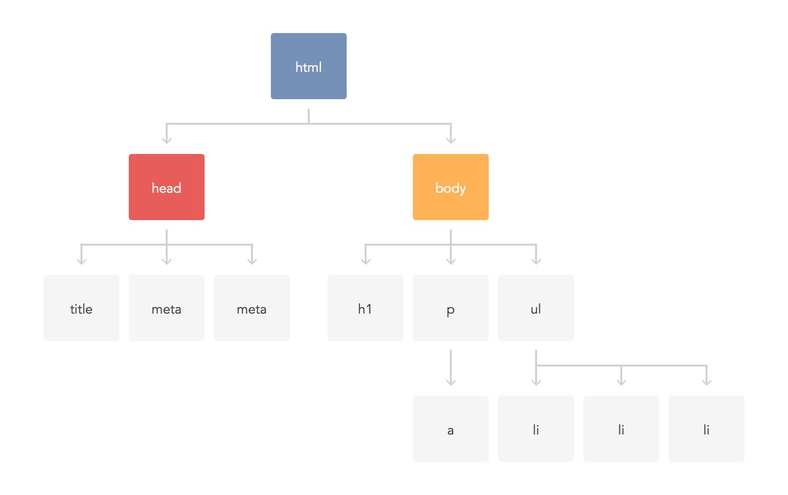

React
Plan (théorique)
- Découverte de React et ses concepts
- Composant avec JSX
Environnement de développement- Flux et Redux
- Aller plus loin :
Découverte
Génèse 2013


Facebook chat
function onMessage(message) {
var chatPanel = getChatPanel(message.thread);
chatPanel.append(message);
}
Facebook chat-notifs
function onMessage(message) {
var chatPanel = getChatPanel(message.thread);
chatPanel.append(message);
chatNotif.increase(1);
if (chatPanel.hasFocus()) {
chatNotif.decrease(1);
}
}

Facebook chat page
function onMessage(message) {
var chatPanel = getChatPanel(message.thread);
chatPanel.append(message);
chatNotif.increase(1);
if (chatPage.currentThread === message.thread) {
chatPage.append(message);
}
if (chatPanel.hasFocus()
|| chatPage.currentThread === message.thread) {
chatNotif.decrease(1);
}
}
Librairies frontend


Frameworks frontend


Outsiders frontend


Concepts
- MVC
- Data-Binding
- Modules
- …
Concepts
- MVC
- Data-Binding
- Modules
- …
- Composants
- Immutabilité
- Fonctionnel
Concepts anciens et modernes, remis en avant par React
Principes de base
Le "V" de "MVC"
- React n'est pas un framework "full-stack"
- React n'est pas non plus qu'un moteur de template
- Gestion de toute la logique de rendu
- Composants graphiques (widgets)
Indépendant du type de rendu
react-dompour le navigateurreact-nativepour iOS/Androidreact-blessedpour le shell
Principes de base
Simplicité
- Un composant est réduit à sa fonction de rendu
- La fonction génère une sortie (ex. arbre DOM)
- La vue complète = retour de la fonction de rendu du composant racine
Principes de base
Performances
- Le DOM est LE maillon faible
- Remplacer l'intégralité du DOM à chaque fois que l'état d'un composant change : GAME OVER

Principes de base
Performances : Virtual DOM
- Optimiser les reflow et les repaint gourmands.
- Solution : ne toucher qu'aux parties réellement modifiées
- Fonction de rendu = retourner un arbre
- Comparaison des arbres = opérations à effectuer
Version
Current stable 15.3.1
Composant
Côté HTML : initialisation
Un <DIV> comme "point de montage"
<body>
<div id="app"></div>
<script src="https://cdn.jsdelivr.net/react/15.0.1/react.js"></script>
<script src="https://cdn.jsdelivr.net/react/15.0.1/react-dom.js"></script>
</body>
Côté JS : rendu d'un composant
Instancier, puis rendre un composant
<body>
<div id="app"></div>
<script src="https://cdn.jsdelivr.net/react/0.14.3/react.js"></script>
<script src="https://cdn.jsdelivr.net/react/0.14.3/react-dom.js"></script>
</body>
var root = React.createElement(Hello)
ReactDOM.render(root, document.getElementById('app'))
Côté JS : création d'un composant
Un composant = une fonction de rendu
<body>
<div id="app"></div>
<script src="https://cdn.jsdelivr.net/react/0.14.3/react.js"></script>
<script src="https://cdn.jsdelivr.net/react/0.14.3/react-dom.js"></script>
</body>
var root = React.createElement(Hello)
ReactDOM.render(root, document.getElementById('app'))
function Hello () {
return React.createElement('div', {className: 'hello'},
React.createElement('span', {}, 'Hello, '),
React.createElement('strong', {}, 'World'))
}
Composant fonction
function Composant (props) {
return element
}
- Entrée : les
propsviennent decreateElement - Sortie : la fonction retourne un élément
React
function Hello (props) {
return React.createElement('div', {className: 'hello'},
React.createElement('span', {}, 'Hello, '),
React.createElement('strong', {}, props.who))
}
var root = React.createElement(Hello, { who: 'World' })
Composant classe
const Composant = React.createClass({
render: function () {
return element
}
})
- Composant stateful (on y reviendra)
- Une méthode
render
const Hello = React.createClass({
render: function () {
return ... this.props.who ...
}
})
var root = React.createElement(Hello, { who: 'World' })
Composant classe (ES6)
class Composant extends React.Component {
render() {
return element
}
}
- Même principe de base
- Utilisation des classes ES6 au lieu du helper
class Hello extends React.Component {
render() {
return ... this.props.who ...
}
}
var root = React.createElement(Hello, { who: 'World' })
Composant stateful
- Initialiser l'état :
getInitialState - Modifier l'état :
setState - Lire l'état :
state
const Counter = React.createClass({
getInitialState: function () {
return { counter: 0 }
},
incr: function () {
this.setState({
counter: this.state.counter + 1
})
},
render: function () {
const incr = this.incr.bind(this)
return React.createElement('button', { onClick: incr }, this.state.counter)
}
})
Composant stateful (ES6)
- Initialiser l'état :
constructor - Modifier l'état :
setState - Lire l'état :
state
class Counter extends React.Component {
constructor (props) {
super(props)
this.state = { counter: 0 }
}
incr () {
this.setState({ counter: this.state.counter + 1 })
}
render () {
const incr = this.incr.bind(this) // ES7 → ::this.incr
return React.createElement('button', { onClick: incr }, this.state.counter)
}
}
Exemple complet
function Contact (props) {
return React.createElement('li', {},
React.createElement('span', {}, 'Name:'),
React.createElement('strong', {}, props.name)
)
}
function ContactList (props) {
return React.createElement('ul', {},
props.names.map(name =>
React.createElement(Contact, { name }))
)
}
var root = React.createElement(ContactList, { names: ['John', 'Bob', 'Arnold'] })
Exemple complet
function Contact (props) {
return React.createElement('li', {},
React.createElement('span', {}, 'Name:'),
React.createElement('strong', {}, props.name)
)
}
function ContactList (props) {
return React.createElement('ul', {},
props.names.map((name, key) =>
React.createElement(Contact, { name, key }))
)
}
var root = React.createElement(ContactList, { names: ['John', 'Bob', 'Arnold'] })
key permet à React de "suivre" les éléments
Initialisation de l'état et des propriétés
ES5
React.createClass({
getInitialState: function () {
return initialState
},
getDefaultProps: function () {
return defaultProps
},
…
})
Exemple : initialiser l'état par les propriétés (Gare aux anti-patterns)
Initialisation de l'état et des propriétés
ES6
class MyComponent extends React.Component {
constructor (props) {
super({...defaultProps, ...props})
this.state = initialState
}
…
}
Alternatives : MyComponent.defaultProps = … ou getDefaultProps()
Initialisation de l'état et des propriétés
Composant stateless
function MyComponent (props) {
…
}
MyComponent.defaultProps = defaultProps
Cycle de vie d'un composant stateful
Mounting
componentWillMount()avant le montagecomponentDidMount()après le montagecomponentWillUnmount()pour nettoyer après démontage
Cycle de vie d'un composant stateful
Updates
shouldComponentUpdate(nextProps, nextState)pour limiter les appels àrender- Cf.
PureRenderMixin
- Cf.
componentWillUpdate(nextProps, nextState)componentDidUpdate(nextProps, nextState)
propTypes
Règles de validation pour contrôler le format des propriétés passées en entrée d'un composant.
{
"num": React.PropTypes.number.isRequired,
"currency": React.PropTypes.oneOf('$', '€', '£'),
"persons": React.PropTypes.arrayOf(React.PropTypes.shape({
"name": React.PropTypes.string.isRequired,
"age": React.PropTypes.number
}))
}
// ES5
React.createClass({ propTypes: … })
// ES6
MyComponent.propTypes = …
// ES7
class MyComponents extends Component { static propTypes = … }
// Stateless
MyComponent.propTypes = …
JSX
Pourquoi JSX ?
React.createElement c'est lourd… Pourquoi ne pas retourner directement du HTML ?
- HTML est coûteux à parser
- On veut justement éviter de manipuler du DOM
- On doit donc générer un arbre
Quelles solutions pour se simplifier la vie ?
Utiliser un nom raccourci ?
const h = React.createElement
function Contact (props) {
return h('li', {},
h('span', {}, 'Name:'),
h('strong', {}, props.name)
)
}
function ContactList (props) {
return h('ul', {},
props.names.map((name, key) => h(Contact, { name, key }))
)
}
var root = h(ContactList, { names: ['John', 'Bob', 'Arnold'] })
C'est déjà hyper mieux !
Autres raccourcis
const { li, span, strong, ul } = React.DOM
const h = React.createElement
function Contact (props) {
return li({},
span({}, 'Name:'),
strong({}, props.name)
)
}
function ContactList (props) {
return ul({},
props.names.map((name, key) => h(Contact, { name, key }))
)
}
var root = h(ContactList, { names: ['John', 'Bob', 'Arnold'] })
Représenter un arbre
- On cherche à représenter un arbre dont les feuilles ont des attributs
- Certains formats ont fait leur preuve pour représenter ce type de données :
- XML (voire HTML)
- JSON (définir une convention pour les attributs)
- YML (idem JSON, et tout format de sérialisation structuré)
Une nouvelle syntaxe, un DSL basé sur XML
function Contact (props) {
return (
<li>
<span>Name: </span>
<strong>{ props.name }</strong>
</li>
)
}
function ContactList (props) {
const contacts = props.names.map((name, key) => (
<Contact name={ name } key={ key } />
));
return <ul>{ contacts }</ul>;
}
var root = <ContactList names={ ['John', 'Bob', 'Arnold'] } />
Transpilation
function Contact ({ name }) {
return (
<li>
<span>Name: </span>
<strong>{ name }</strong>
</li>
)
}
Avec Babel (ES6 cadeau au passage, on peut ressortir IE)
<script src="https://cdn.jsdelivr.net/babel/5.8.33/browser.js"></script>
<script type="text/babel">
…
</script>
React.createFactory
Bonus JSX: on s'épargne createFactory()
var MyComponent = require('MyComponent');
function render() {
return MyComponent({ foo: 'bar' }); // Attention déprécié depuis 0.12
}
var React = require('react');
var MyComponent = React.createFactory(require('MyComponent'));
function render() {
return MyComponent({ foo: 'bar' });
}
var React = require('react');
var MyComponent = require('MyComponent');
function render() {
return <MyComponent foo="bar" />;
}
Environnement de développement
Les objectifs
Avant de se simplifier la vie, il va falloir se la compliquer…
Mais nous serons récompensés !
- Phase de build :
- Modules (CommonJS ou ES6) pour découper son code
- Fonctionnalités ES6 qui changent la vie (object spreading, destructuring, classes, modules…)
- Transformation JSX
- Serveur de dev :
- Rechargement automatique aux changements
- Rechargement isolé des modules (hot reload)
Structure simple
static/
index.html
src/
app.js
Contact.js
ContactList.js
Exercice : Écrire les composants Contact et ContactList
// app.js
import React from 'react'
import ReactDOM from 'react-dom'
import ContactList from './ContactList'
const element = <ContactList names={ ['John', 'Bob', 'Arnold'] } />
const mount = document.getElementById('app')
ReactDOM.render(element, mount)
La stack : serveur HTTP
npm install --save-dev serve
{
"scripts": {
"serve": "serve --port 3000 static/"
}
}
npm run serve
Visiter http://localhost:3000
Pour l'instant ça ne fait pas grand-chose…
La stack : phase de build
npm install --save react react-dom
npm install --save-dev \
browserify \
babelify babel-preset-es2015 babel-preset-react
Créer .babelrc (cf. exemple)
{
"build": "browserify --debug -t babelify src/app.js -o static/build.js"
}
npm run build
Ça marche ! mais il faut relancer la commande à chaque modification.
La stack : build incrémental
npm install --save-dev watchify
{
"watch": "watchify --debug -t babelify src/app.js -o static/build.js -v"
}
npm run watch
Plus besoin de relancer la commande à chaque modification ! Mais il faut rafraichir la page…
On peut faire mieux !
La stack : hot reload
npm install --save-dev \
livereactload \
babel-plugin-react-transform \
react-proxy@1
# Windows: --ignore-scripts
{
"watch": "watchify -p livereactload …"
}
Compléter .babelrc (cf. exemple)
npm run watch
Même plus besoin de rafraichir.
Exercice : ajouter un composant à état pour observer que les états sont conservés lors du hot reload
Produire un build prêt pour la production
On va ajouter une phase de minification :
npm install -D uglify-js
{
"build:prod": "NODE_ENV=production browserify -t babelify src/app.js > static/build.js",
"postbuild:prod": "uglifyjs static/build.js -o static/build.js"
}
npm run build:prod
Lancer tous les scripts en une commande
npm install --save-dev npm-run-all
{
"dev": "npm-run-all --parallel serve watch"
}
npm run dev
Quand on ajoutera le build de CSS, voire d'HTML, et autres taches à lancer en parallèle, il sera de plus en plus utile d'avoir un unique point d'entrée simple.
La stack : vue d'ensemble
- Peu de dépendances, uniquement des outils CLI
- Une commande pour tout :
npm run dev
Résultat plus léger qu'avec Grunt, Gulp, ou même Webpack (plus populaire), mais ils proposent souvent plus d'options.
Starter kits alternatifs :
- react-redux-starter-kit : très complet
- react-transform-boilerplate : simple
React Developer Tools
create-react-app
Les objectifs
- Un environnement de développement complet
- Phase de build : ES2015, modules, JSX…
- Serveur de dev : hot reload
- Validation du code (lint)
Les outils
- Webpack
- Babel
- ESlint
- tous les plugins à installer et configurer
→ JavaScript Fatigue
Pré-requis : node
Pré-requis sur sa machine : node
create-react-app
Un outil qui propose une configuration par défaut qu'on n'a pas à gérer :
npm install -g create-react-app
Tout est dans la boite !
create-react-app my-app
→ JavaScript Lazyness
Édité par Facebook, devenu référence immédiate (adieu les boilerplates).
Mode power user
Les outils et leur configuration ne sont pas surchargeables. C'est volontaire. Quand on sera grands, on voudra personnaliser Webpack ou ESLint. On éjecte alors les petites roues :
npm run eject
La stack : conclusion
- Installation rapide
- Stack de dév complète
- Outils populaires (choix consensuels)
- Configuration non contraignante
- Possibilité de passer en mode "avancé"
- Pas besoin au début
- Indispensable à terme (config Webpack)
Flux
Communication inter-composants
- Communication descendante :
- Le composant "parent" a un état qu'il transmet par props
- On l'appelle le "owner"
- Communication ascendante :
- Le "owner" passe un callback au descendant
"In React, data flows from owner to owned component through props as discussed above."
Communication inter-composants : exercice
Implémenter les composants ContactForm et Root
// Root.js
…
render () {
const { names } = this.state
return (
<div>
<ContactList names={ names } />
<ContactForm onAdd={ ::this.addName } />
</div>
)
}
…
Problèmes posés
- C'est pas très scalable :
- Communiquer avec son "grand-parent"
- Communiquer avec ses "frères"
- Communiquer avec ses "petits-enfants"
- Dialogue avec le monde extérieur :
- Ajax / localStorage / …
Solutions possibles
- Communiquer avec son "grand-parent"
- le parent intermédiaire fait le relais du callback
- Communiquer avec ses "frères"
- le parent commun relaie les props via un callback
- Communiquer avec ses "petits-enfants"
- l'enfant intermédiaire transmet les props
- Dialogue avec le monde extérieur :
- Fetch dans le componentWillMount
Architecture Flux

- Un dispatcher global reçoit les actions
- Les "stores" contiennent les données métier
- Le dispatcher les informe des actions
- Le composant se branche sur les stores
Pourquoi Flux ?
- Flux unidirectionnel des informations
- Possibilité de logger les actions et les rejouer
- Un composant écoute directement les stores
- Plus besoin de communication inter-composants
- Les actions peuvent être déclenchées de l'extérieur
- Plus de requêtes dans
componentWillMount
- Plus de requêtes dans
Exercice : implémenter Flux
Implémentation
- Le dispatcher est un
EventEmitterglobal- Déclencher une action =
e.emit
- Déclencher une action =
- Un store est un
EventEmitterglobal- Il écoute les actions du dispatcher
- Il maintient un état interne
- Il émet des événements pour notifier des mises à jour
- Le composant écoute les événements du store
Implémentation : Dispatcher
npm install --save jvent
// dispatcher.js
import Jvent from 'jvent';
const dispatcher = new Jvent();
export default dispatcher;
Implémentation : Store
// stores/contacts.js
import Jvent from 'jvent';
import dispatcher from '../dispatcher';
// Le store est un Event Emitter
const store = new Jvent();
export default store;
// On expose les données
store.data = { names: [] };
// On écoute les actions (action = nom + paramètres)
dispatcher.on('add-name', (params) =>{
store.data.names.push(name); // On met à jour les données métier
store.emit('change', store.data}); // On notifie la vue
});
Implémentation : Dispatch d'action
// components/ContactForm.js
import dispatcher from '../dispatcher';
export default class Root extends React.Component {
…
// Plus besoin de la prop "onAdd"
submit (e) {
e.preventDefault();
this.setState({ value: '' });
// On dispatche l'action "add-name"
dispatcher.emit('add-name', this.state.value);
}
…
}
Implémentation : Initialisation depuis l'extérieur
// app.js
import dispatcher from './dispatcher';
// Fetch data
setTimeout(function () {
dispatcher.emit('init-names', ['John', 'Bob', 'Arnold']);
}, 1000);
// Init view
const element = <Root />;
Implémentation : Branchement sur le store
// components/Root.js
import store from '../stores/contacts';
export default class Root extends React.Component {
// On se branche sur les mises à jour du store
componentDidMount () { contactsStore.on('change', this.update) }
// Nettoyage au unmount (memory leak)
componentWillUnmount () { contactsStore.off('change', this.update) }
constructor (props) {
super(props)
this.update = ::this.setState // juste pour avoir une réf. commune au on/off
this.state = { ...store.data } // init données
}
…
}
Implémentation
Répéter la logique de branchement aux stores est fastidieuse.
Des solutions ?
- Higher Order Components
- Wrappers
- Héritage (limité aux composants classe, peu dynamique)
- Mixins (ancienne méthode qui tend à être mise au rebut)
- Décorateurs (ES7, équivalent aux HOC)
Implémentation : Higher Order Component
class Root extends React.Component {
constructor (props) {
super(props)
}
render () {
const { names } = this.props
…
}
}
export default connect(Root, store)
Implémentation : Higher Order Component
export default function connect (Component, store) {
return class ConnectedComponent extends React.Component {
constructor (props) {
super(props);
this._update = ::this.setState;
this.state = store.data;
}
componentDidMount () {
store.on('change', this._update);
}
componentWillUnmount () {
store.off('change', this._update);
}
render () {
return <Component { ...this.props } { ...this.state } />;
}
}
}
Implémentation : Wrappers
// components/Wrapper.js
export default class Wrapper extends React.Component {
constructor (props) {
…
this.state = props.store.data
}
componentDidMount () { this.props.store.on('change', …) }
componentWillUnmount () { this.props.store.off('change', …) }
render () {
const children = React.Children.map(this.props.children, child =>
React.cloneElement(child, { ...this.props, ...this.state }))
return <div>{ children }</div>
}
}
// app.js
const element = <Wrapper store={ contactStore }><Root /></Connect>
Une architecture idéale ?
- Des variables globales (store, dispatcher)
- Difficile à tester
- Difficile à exécuter côté serveur
- Données stockées dans le store
- Application stateful
Quelques implémentations populaires
GitHub Era
Cf. Which flux? et awesome-react pour plus de ressources
Redux
Présentation
Can Redux be considered a Flux implementation?
Yes, and no.
by Dan Abramov

Vision
Redux repose sur trois principes :
- Single source of truth (store → Flux)
- State is read-only (actions → Flux)
- Mutations are written as pure functions (reducers → pas Flux)
Action
Un simple objet, seul le type est obligatoire :
{
type: 'ADD_CONTACT',
payload: {
name: 'Bob'
}
}
Pour le type, on pourrait être tenté d'utiliser les Symbol ; hélas ils ne sont pas sérialisables.
Un standard permet d'uniformiser la manière de les rediger : FSA
Action creator
Une fonction pure retournant une action :
function addContact (name) {
return { type: 'ADD_CONTACT', payload: { name } }
}
function deleteBuilding (height, location) {
return { type: 'DELETE_BUILDING', payload: { height, location } }
}
function showRecent () {
return { type: 'CHANGE_DATE_FILTER', payload: { ago: 3600 } }
}
État de l'application
Avant de se lancer dans le développement, penser à la forme qu'aura son état global (il évoluera bien sûr) :
{
contacts: {
[id]: 'Bob'
}
}
Les reducers ont pour rôle de transformer cet état (en retournant un nouvel état)
Reducers
Un reducer est une fonction de transformation :
(previousState, action) => nextState
function contactsApp (state = initialState, action) {
switch (action.type) {
case 'ADD_CONTACT':
return newState
case 'TOGGLE_FRIENDS':
return newState
default:
return state
}
}
Inconvénient : On va vite se retrouver avec un switch/case énorme !
Reducers : découpage
Chaque reducer a en charge une partie de l'arbre global :
import { combineReducers } from 'redux';
function reducer1 (state = subState1, action) {
switch (action.type) { … }
}
function reducer2 (state = subState2, action) {
switch (action.type) { … }
}
const rootReducer = combineReducers({
sub1: reducer1,
sub2: reducer2
})
// État global: { sub1: …, sub2: … }
Reducers : createReducer
Quand on veut juste alléger le switch/case :
const reducer = createReducer(initialState, {
ADD_CONTACT: addContact,
TOGGLE_FRIEND: toggleFriend
})
function addContact (state, { id, name }) {
const contacts = { ...state.contacts, [id]: name }
// On retourne un NOUVEL ÉTAT
return { ...state, contacts }
}
function toggleFriend (state, action) {
…
}
Store
Pour rappel, un store :
- contient l'état de l'application
- notifie des mises à jour de l'état —
subscribe() - donne un accès en lecture à l'état courant –
getState() - écoute les actions —
dispatch()
import { createStore } from 'redux';
const store = createStore(reducer, initialState);
store.subscribe(() => updateApp(store.getState()))
store.dispatch(actionCreator())
Architecture Redux
react-redux
Même si Redux a été créé dès le départ pour fonctionner de concert avec React, il ne s'occupe en réalité que de l'état.
react-redux offre une API légère en charge du binding entre store et components.
Containers vs Components
| Containers | Dumb Components | |
|---|---|---|
| Emplacement | Racine, route handlers | Branches et feuilles |
| Branché sur Redux | Oui | Non |
| Accès aux données | Souscrit au state Redux | Depuis les props |
| Changer les données | Dispatch des actions Redux | Invoque les callbacks reçus en props |
react-redux : Provider
On vient wrapper notre container racine avec <Provider>
import App from './containers/App';
import { Provider } from 'react-redux';
const root = <Provider store={store}><App /></Provider>
Le store est alors disponible pour tous les composants descendants.
react-redux : connect
connecter un composant à Redux revient à :
- sélectionner la portion du state qui le concerne
- choisir et binder les actions dont il a besoin
import { connect } from 'react-redux';
class MyComponent { … }
export default connect(select, actions)(MyComponent)
@connect(select, actions)
export default class MyComponent { … }
react-redux : select
Une fonction appState => componentProps
Son but est de mapper l'état global de l'application vers les propriétés reçues par le composant.
function mapStateToProps ({ contacts, ui, data3… }) {
return { contacts } // pas besoin de récupérer la totalité de l'état
}
export default ({ contacts }) => <div>{ contacts }</div>
react-redux : actions
Un objet { actionName: actionCreator }
Chaque action sera injectée dans le composant sous la forme d'une prop permettant de dispatcher l'action correspondante.
const actions = {
addContact: (name) => ({ type: 'ADD_CONTACT', name })
}
export default ({ addContact }) =>
<button onClick={ addContact('Bob') }>Add</button>
react-redux: bindActionCreators
Grâce à ce helper, on peut auto-dispatcher l'action au sein des components.
import { bindActionCreators } from 'redux'
const mapDispatchToProps = (dispatch) => ({
actions: bindActionCreators(contactActions, dispatch)
})
react-redux : exercice
Remplacer notre implémentation maison de Flux par Redux

Asynchrone
On va découper nos actions en deux parties :
- Début de l'opération
- Fin de l'opération
function requestAPI (url) {
return { type: 'REQUEST', payload: { url } }
}
function receiveAPI (response) {
return { type: 'RECEIVE', payload: { response }, error: response instanceof Error }
}
store.dispatch(requestAPI(url)); // Début
fetch(url)
.then(response => response.json())
.then(json => store.dispatch(receiveAPI(json))) // Fin OK
.catch(err => store.dispatch(receiveAPI(err))) // Fin FAIL
Asynchrone : redux-thunk
Pour créer une action globale, on va d'abord devoir la découpler du store. Mais comment dispatch ?
import thunkMiddleware from 'redux-thunk';
import { createStore, applyMiddleware } from 'redux';
const store = createStore(
rootReducer,
applyMiddleware(thunkMiddleware)
)
function fetchAPI (url) {
return (dispatch) => {
dispatch(request(url)); // Début
fetch(url).then(response => response.json())
.then(json => dispatch(receiveAPI(json))) // Fin OK
.catch(err => dispatch(receiveAPI(err))) // Fin FAIL
}
}
store.dispatch(fetchAPI(url))
Middlewares
redux-thunk est un middleware. Qu'est-ce ? Une fonction :
store => next => action => anything
storeest limité aux méthodesgetStateetdispatchgetState()retourne l'état courant du storedispatch(action)lance une action
next(action)passe la main au middleware suivantactionest l'action dispatchée précédemment- La valeur retournée sera le retour final de
dispatch()
const logger = ({ dispatch, getState }) => next => action => {
console.log('ACTION', action)
console.log('STATE', state)
return next(action)
}
Outils
redux-loggeretredux-node-loggerredux-formredux-thunketredux-simple-promisepour l'asynchroneredux-rx- Redux Dev Tools
Tests
Tests: objectifs
React est intimement lié à la construction de GUI.
Voici par conséquent les étapes classiques de tests :
- Rendre un composant
- Trouver un des nodes DOM généré
- Vérifier son contenu, son apparence
- (optionnel) Interagir avec le composant
Outils
Les outils de tests sont fournis dans un package à part :
npm i react-addons-test-utils -S
import TestUtils from 'react-addons-test-utils';
Test Runners
- jest — mock all the things!
- karma — l'émissaire du monde Angular
- jsdom — émulation par Nodejs
Tests: rendering
TestUtils.renderIntoDocument()
import { renderIntoDocument } from 'react-addons-test-utils';
const contact = renderIntoDocument(<Contact firstName="François" lastName="Pignon" />);
Test: targeting
findRenderedDOMComponentWithClass()
findRenderedDOMComponentWithTag()
To Scry
Tests: scrying
scry === findAll
scryRenderedDOMComponentsWithClass()
scryRenderedDOMComponentsWithTag()
Simulate
React se base sur la propagation de synthetic events au sein de son Virtual DOM.
Durant les tests on peut simuler ces évènements :
import { Simulate } from 'react-addons-test-utils'
// <input ref="product">
// <input type="submit" ref="buy" value=̈́"J'achète">
var champ = this.refs.product
var button = this.refs.buy
champ.value = 'canard vivant'
Simulate.change(champ)
Simulate.click(button)
Shallow Rendering
Technique visant à se libérer du DOM durant les tests.
- on instancie un composant
- on récupère le
ReactElementissu de l'appel àrender() - on vérifie ses
propsetchildren
Shallow renderer
import TestUtils from 'react-addons-test-utils';
const shallowRenderer = TestUtils.createRenderer();
shallowRenderer.render(React.createElement(MyComponent, { className: 'MyComponent' }, 'du contenu'));
const component = shallowRenderer.getRenderOutput();
Shallow output
expect(component.props.className).to.equal('MyComponent');
{
"type": "section",
"_store": {
"props": {
"className": "MyComponent",
"children": [{
"type": "h1",
"_store": {
"props": {
"className": "MyComponent-header",
"children": "Titre"
},
"originalProps": {
"className": "MyComponent-header",
"children": "Titre"
}
}
}]
}
}
}
Isomorphisme
Application "isomorphique"

- S'exécute aussi bien côté client que serveur
- Mêmes données = même résultat
Pourquoi ?
Référencement, chargement plus rapide…
Principe général côté serveur :
Côté client :
import { render } from 'react-dom';
…
render(reactElement, domElement)
Côté serveur :
import { renderToString } from 'react-dom/server';
… // Théoriquement le même code
const html = renderToString(reactElement)
Tout n'est pas si simple…
En pratique, tout n'est pas "iso" :
- Attention aux singletons : une instance par requête
- Pas de store global
- Les interactions ne sont pas les mêmes
- Normalement on s'en fout
- Serveur = seulement génération initiale
- Chargement des données initiales
- Côté client des appels HTTP
- Côté serveur des requêtes BDD
L'état de l'application
Avant
On partait d'un état vide, qu'on peuplait en lançant des actions d'initialisation.
store.dispatch(fetchContacts());
Après
Côté serveur, on génère l'état à partir de données récupérées, puis on le passe au client.
Côté client, on part de cet état injecté. On ne lance plus d'actions d'initialisation !
Le store : mort aux singletons !
On n'exporte plus directement le store, mais une fonction state => store :
// Avant
export default createStore(reducers, initialStore)
// Après
export default (state = {}) =>
createStore(reducers, { ...initialStore, ...state })
- côté serveur on génère le
stateavant de répondre - côté client on utilise la valeur injectée par le serveur
Le store, côté client
Ça ne change pas grand-chose :
// Avant
import store from '…/store';
// Après
import configureStore from '…/configure-store';
const store = configureStore(window.APP_STATE)
// …
const element = <Provider store={ store }><Root /></Provider>
render(element, document.getElementById('app'))
stateinjecté en variable globale
Rester compatible avec le mode serverless
Si on sait gérer le cas où l'état global n'est pas injecté, alors on peut aussi fonctionner en mode "fichier statique" :
const hasState = !!window.APP_STATE
// Serverless → état vide
const state = hasState ? window.APP_STATE : {}
// Initialisation du store
const store = configureStore(state)
// Serverless → actions d'initialisation
if (!hasState) {
store.dispatch(fetchContacts())
}
// …
Le store, côté serveur
Le code est le même que côté client :
import configureStore from '…/configure-store';
function renderApp () {
return getState() // Génération de l'état de l'application
.then(state => {
const store = configureStore(state)
… // Théoriquement le même code que côté client
return renderToString(reactElement)
})
}
Les données
Côté client : XMLHttpRequest, $.ajax, fetch…
Côté serveur : requêtes SQL, fichiers, requêtes HTTP…
// model-server.js
function getState () {
return query('SELECT * FROM contacts')
// On a récupéré les contacts
// L'état global est { "contacts": lesContacts }
.then(contacts => ({ contacts }))
}
// model-client.js
function getState () {
return fetch('/contacts').then(res => res.json())
// On a récupéré les contacts
// L'état global est { "contacts": lesContacts }
.then(contacts => ({ contacts }))
}
Génération du HTML
Idée : des commentaires pour injecter les résultats
<html>
<head>
<meta charset="UTF-8" />
<title>I'm in a React app!</title>
</head>
<body>
<div id="app"><!-- APP_HERE --></div>
<!-- APP_STATE_HERE -->
<script src="build.js"></script>
</body>
</html>
Génération du HTML
Idée : des commentaires pour injecter les résultats
// State's HTML
const stateHTML = '<script>window.APP_STATE=' + JSON.stringify(state) + '</script>'
// App's HTML
const element = <Provider store={ store }><Root /></Provider>;
const appHtml = renderToString(element);
return html
// Inject app into global HTML
.replace(/<!-- APP_HERE -->/, appHtml)
// Inject state into global HTML
.replace(/<!-- APP_STATE_HERE -->/, stateHTML)
Challenge accepted.
- Problème du singleton : facile
- Interactions : aucune
- Chargement des données : souvent facile
Ce n'est pas une solution magique
- La construction de l'état n'est pas toujours trivial
- C'est même parfois très compliqué !
renderToStringest bloquante et lente- cache, PureRenderMixin…
Idée : passer serverless quand la charge est trop importante.
Routing
Pourquoi ?
- Pouvoir partager des URLs
- On colle le
stateen hash \o/
- On colle le
- Pouvoir partager des jolies URLs
Comment ?
react-router(très populaire, copain avec redux)- Des alternatives :
rrouter(système de data fetching intéressant)- awesome-react#routing
- react/Complementary-Tools#routing
react-router
npm install --save react-router history
- Routes imbriquées
- Redirections
- Routes paramétrées
- Hooks (
onEnter,onLeave) - Configuration en JSX ou JSON
Déclaration des routes
// routes.js
import { browserHistory } from 'react-router' // singleton
export default (
<Router history={ browserHistory }>
<Route path="/" component={ Root }>
<Route path="contacts" component={ ContactList } />
<Route path="*" component={ NoMatch } />
</Route>
</Router>
)
// Root.js
export default (props) => (
<div>
{ props.children }
</div>
)
// app.js
render(routes, domElement)
That's all folks!
Routes imbriquées
// routes.js
export default (
<Router>
<Route path="/" component={ Root }>
<Route path="contacts" component={ Contacts }>
<Route path="list" component={ ContactList } />
<Route path="new" component={ ContactForm } />
</Route>
<Route path="*" component={ NoMatch } />
</Route>
</Router>
)
/ → <Root />
/contacts → <Root><Contacts /></Root>
/contacts/list → <Root><Contacts><ContactList /></Contacts></Root>
/contacts/new → <Root><Contacts><ContactForm /></Contacts></Root>
Routes index et redirections
// routes.js
export default (
<Router>
<Route path="/" component={ Root }>
<IndexRoute component={ Home } />
<Route path="contacts" component={ Contacts }>
<IndexRoute component={ ContactList } />
<Redirect from="list" to="" />
<Route path="new" component={ ContactForm } />
</Route>
<Route path="*" component={ NoMatch } />
</Route>
</Router>
)
/ → <Root><Home /></Root>
/contacts → <Root><Contacts><ContactList /></Contacts></Root>
/contacts/list → /contacts
/contacts/new → <Root><Contacts><ContactForm /></Contacts></Root>
Liens
location.href === '/contacts'
// <a href="/">Home</a>
(<Link to="/">Home</Link>)
// <a href="/" class="active">Home</a>
(<Link to="/" activeClassName="active">Home</Link>)
// <a href="/">Home</a>
(<IndexLink to="/" activeClassName="active">Home</Link>)
// <a href="/contacts/new?name=Bob">New</a>
(<Link to={{ pathname: '/contacts/new', query: { name: 'Bob' } }} activeClassName="active">New</Link>)
Routes paramétrées
// routes.js
export default (
<Router>
<Route path="/" component={ Root }>
<IndexRoute component={ Home } />
<Route path="contacts" component={ Contacts }>
<IndexRoute component={ ContactList } />
<Redirect from="list" to="" />
<Route path="new" component={ ContactForm } />
<Route path=":id" component={ ContactDetails } />
</Route>
<Route path="*" component={ NoMatch } />
</Route>
</Router>
)
// ContactDetails.js
export default (props) => (
<div>
<h2>Contact #{ props.params.id }</h2>
</div>
)
Hooks
function onEnter (nextState, replace, callback) {
// nextState.location → current location
// nextState.routes → matched routes
// nextState.params → params
// nextState.components → React rendered params
// replace({ pathname, query }) → redirects to location
// optional callback() → transition paused until called
…
}
function onLeave () {
// No argument, no way to abort transition here
// Use "routerWillLeave" (cf. Lifecycle)
…
}
<Route onEnter={ onEnter } onLeave={ onLeave }
Aller plus loin…
Quelques fonctionnalités avancées :
- dynamic rendering avec
getChildRoutes,getIndexRoute, andgetComponentsen propriétés des routes - Lifecycle :
routerWillLeavepour contrôler la sortie d'une URL (onLeavemade useful) - Animations de transition
- Utilisation de
historypour déclencher des changement de routes depuis l'extérieur
react-router + redux =
react-router-redux
Stock et gère l'history dans un reducer.
Impacter l'URL se fait via des actions, qui sont serialisables, rejouables…
npm install --save react-router-redux
routing reducer
A la création du store, on combine un reducer dédié au routage
import { routerReducer } from 'react-router-redux'
const store = createStore(
combineReducers({
...reducers,
routing: routerReducer
})
)
Synchro history <> store
hashHistory peut être préférable dans le cas d'une app electron
import { browserHistory } from 'react-router'
import { syncHistoryWithStore } from 'react-router-redux'
const history = syncHistoryWithStore(browserHistory, store)
ReactDOM.render(
<Provider store={ store }>
<Router history={ history }>
…
</Router>
</Provider>,
document.getElementById('root')
)
connection
Valeur dispo depuis ownProps
const mapStateToProps = (state, { location }) => ({
contactId: location.query.id,
})
Routing actions
Ajouter le middleware à la création du store
import { browserHistory } from 'react-router'
import { routerMiddleware } from 'react-router-redux'
const middleware = routerMiddleware(browserHistory)
const store = createStore(
reducers,
applyMiddleware(middleware)
)
import { routerActions } from 'react-router-redux'
this.props.dispatch(routerActions.push('/foo'))
push, replace, go, goBack, goForward
Rendu côté serveur
import { match, RouterContext } from 'react-router'
serve((req, res) => {
// Note that req.url here should be the full URL path from
// the original request, including the query string.
match({ routes, location: req.url }, (error, redirectLocation, renderProps) => {
if (error) {
res.status(500).send(error.message)
} else if (redirectLocation) {
res.redirect(302, redirectLocation.pathname + redirectLocation.search)
} else if (renderProps) {
res.status(200).send(renderToString(<RouterContext {...renderProps} />))
} else {
res.status(404).send('Not found')
}
})
})
Rendu côté serveur : data fetching
La question de la récupération initiale des données reste entière… Le routeur nous apporte-t-il quelque-chose ?
Idée : déléguer le chargement des données à la route plutôt qu'au composant.
onEnter+ callback pour charger les données- Autre piste :
redux-routerqui émet une actionROUTER_DID_CHANGE+getState(pour fetch conditionné à l'état courant) +components(pour savoir ce qu'il faut récupérer) → Exemple complet- Attention : installer
redux-router@latest(cf. npm install only grabs package.json)
- Attention : installer
Conclusion
- Une solution de routing complète et adaptable
- Pas encore de solution idéale pour le data-fetching
- Mais on a de plus en plus d'outils
- C'est une problématique "chaude" (cf.
async-props)
- L'API a énormément changé jusqu'à la 1.0
- S'attendre à une 2.0 velue
- Pas une obligation, des alternatives…
Legacy
Intégrer React dans une "vieille" application
Facile : parties indépendantes de la page
- Remplacer composant par composant
- Possibilité de dialoguer via le dispatcher
Moins facile : modifier le DOM
- Code qui risque de remplacer l'élément parent
- Code qui va modifier le DOM interne à l'élément
- Des solutions ?
Modification du DOM "parent"
Exemple : routing ajax old school
Le problème
- React va garder une référence à son composant même si le DOM a disparu.
- En cas de rappel à
render()→ comportement erratique - Fuites mémoire
La solution
La clé : react-dom.unmountComponentAtNode pour démonter un composant
Interaction avec le DOM du composant
En lecture seule (ex. canvas)
On a besoin d'accéder au DOM mais on ne modifie pas l'arbre. La clé : react-dom.findDOMNode
componentDidMount () {
const context = findDOMNode(this).getContext('2d')
paint(context, this.props.rotation)
}
componentDidUpdate () {
const context = findDOMNode(this).getContext('2d')
context.clearRect(0, 0, 200, 200)
paint(context, this.props.rotation)
}
render () {
return <canvas width={200} height={200} />
}
Interaction avec le DOM du composant
Idéalement, ne pas modifier le DOM hors de React
- Écouter les événements externes, modifier l'état ou les propriétés en réaction
- Exemple : React + HTML5 Drag & Drop API
Quand ce n'est pas possible
- Maintenir manuellement la cohésion React/DOM
- Exemple : React + jQuery UI sortable
- Probablement plus "cher" qu'une réécriture
Context
Passer une donnée le long de l'arbre
Les composants intermédiaires jouent les passe-plat
// App defines btnColor
function App (props) {
return <MessageList color={ color } />;
}
// MessageList just passes it along the way
function MessageList ({ color }) {
return <div>
<Message text={ 'hello' } color={ color } />
<Message text={ 'world' } color={ color } />
</div>;
}
// Message uses it
function Message ({ text, color }) {
return <span style={ { color } }>{ text }</span>;
}
context pour effectuer ce passage de manière transparente
Context : le parent
childContextTypesdéfinit le format du contextgetChildContext()définit sa valeur
class App extends React.Component {
getChildContext () {
return { color: 'blue' };
}
render () {
// Plus besoin de passe-plat
return <MessageList />;
}
}
App.childContextTypes = { color: React.PropTypes.string }
Un composant stateless ne peut définir un contexte
Context : les enfants
contextTypesdéfinit le contexte qu'on veut recevoirthis.contextest alors défini- ou passé en second paramètre des composants stateless
function Message (props, context) {
return <span style={ { color: context.color } }>{ props.text }</span>;
}
Message.contextTypes = { color: React.PropTypes.string };
Les composants intermédiaires sont simplifiés
function MessageList ({ color }) {
return <div>
<Message text={ 'hello' } />
<Message text={ 'world' } />
</div>;
}
Pour ou contre ?
- Composants intermédiaires largement simplifiés
- Déclaration explicite du contexte
- Mais plus difficile à suivre, attention à la maintenance
Faire / Ne pas faire
GraphQL et Relay
Pourquoi GraphQL et Relay ?
- Chaque composant définit son propre arbre de données
- Mais si chaque composant fait ses requêtes Ajax ?
- → game over
- Du coup on doit centraliser les requêtes
- Et donc centraliser la définition de l'état global
- C'est souvent compliqué…
Here comes a new challenger
- Chaque composant déclare ses requêtes adaptées
- Le framework se débrouille pour dispatcher tout ça
GraphQL
- Un langage de requête
- Un protocole (implémentation serveur)
graphql.get(`query {
users {
email,
picture { href }
}
}`)
.then(users => {
// partial users list
// [ { email: "…", picture: { href: "…" } } ]
console.log(users)
})
GraphQL : côté serveur
- Définition du schéma avec
graphql-js- Implémente aussi les fonctions de résolution des éléments du graphe
- Intégration dans Express avec
express-graphql
const schema = new GraphQLSchema({
…
})
app.use('/graphql', graphqlHTTP({
schema,
graphiql: true
}))
graphiqlest un explorateur GraphQL dans le navigateur
Relay
Higher Order Component :
class User extends React.Component {
render () {
return <span>{ this.props.user.name } ({ this.props.user.email })</span>;
}
}
export default Relay.createContainer(User, {
fragments: {
user: () => Relay.QL`fragment on User { email }`
}
})
// Render a specific user component
ReactDOM.render(<RelayRootContainer Component={ User } route={
queries: {
user: () => Relay.QL`query { node(id: "123") }`
}
} />, domElement)
Relay
- De nombreuses requêtes vont avoir des fragments en commun
Relayva factoriser tout ça…- …produire une seule requête finale…
- …et dispatcher les fragments aux composants
Conclusion
- Pour démêler tout ça : How do React, Flux, GraphQL, and Relay work together
- Définissez votre besoin avant de plonger
Alternatives
- Falcor (Netflix)
JSON Graphest une spec indépendante
Helpers
Boilerplate
L'expressivité de React et du paradigme Flux / Redux a pour conséquence désagréable d'introduire nombre de répétitions.
Les fonctions suivantes nous permettent de retrouver un code + DRY
classNames
npm install --save classnames
Pas de DOM, pas de classList, donc
classNames('foo', 'bar'); // => 'foo bar'
classNames('foo', { bar: true }); // => 'foo bar'
classNames({ 'foo-bar': true }); // => 'foo-bar'
classNames({ foo: true }, { bar: true }); // => 'foo bar'
classNames({ foo: true, bar: true }); // => 'foo bar'
// lots of arguments of various types
classNames('foo', { bar: true, duck: false }, 'baz', { quux: true }) // => 'foo bar baz quux'
// other falsy values are just ignored
classNames(null, false, 'bar', undefined, 0, 1, { baz: null }, ''); // => 'bar 1'
createConstants
export function createConstants (...constants) {
return constants.reduce((acc, constant) => {
acc[constant] = constant;
return acc;
}, {});
}
Avant
export default {
'CHANGE_NAME': 'CHANGE_NAME',
'ADD_USER': 'ADD_USER'
}
Après
export default createConstants(
'CHANGE_NAME',
'ADD_USER'
);
createReducer
export function createReducer (initialState, fnMap) {
return (state = initialState, { type, payload }) => {
const handler = fnMap[type];
return handler ? handler(state, payload) : state;
};
}
// Avant
export default (state = initialState, action) => {
switch (action.type) {
case 'CHANGE_NAME': return …
default: return state
}
}
// Après
export default createReducer(initialState, {
CHANGE_NAME: (state, payload) => { ... }
});
Voir Flux Standard Action
createAction
Module redux-actions
Force la convention Flux Standard Action
npm install --save redux-actions
changeName = createAction('CHANGE_NAME');
expect(changeName('Lilian')).to.deep.equal({
type: 'CHANGE_NAME',
payload: 'Lilian'
});
En réalité createAction retourne un action creator
Performances
- Mesurer : React Performance Tools
Côté serveur : accélérer le rendu initial
- Limiter la taille de l'arbre
- Mettre en place un pool de renderers
Côté client : limiter les appels à render
shouldComponentUpdate- Solution simple :
react-pure-render- Idée :
immutable.equals
- Idée :
À bientôt !
@naholyr | @Delapouite
P.S: awesome-react